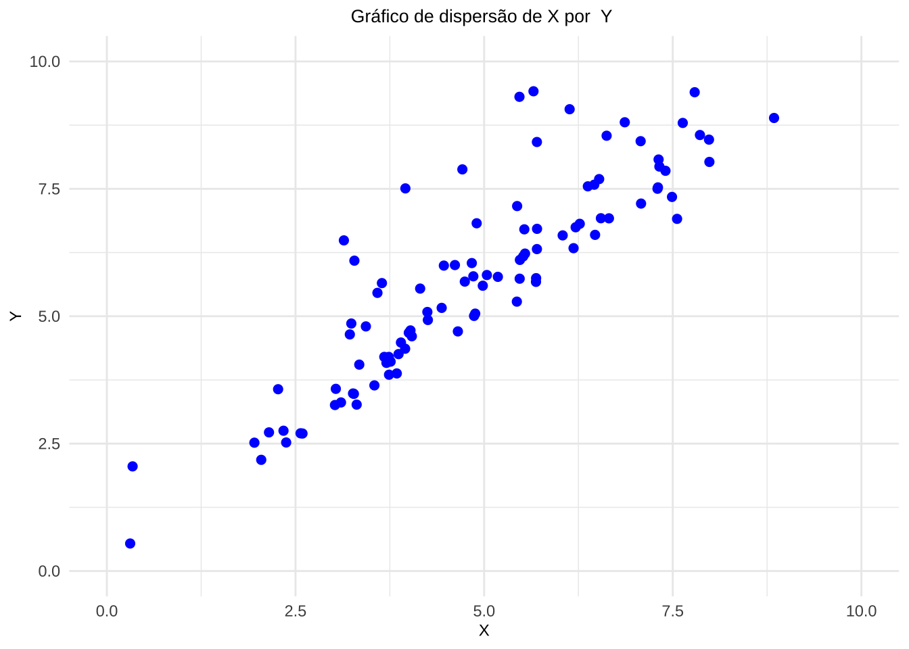
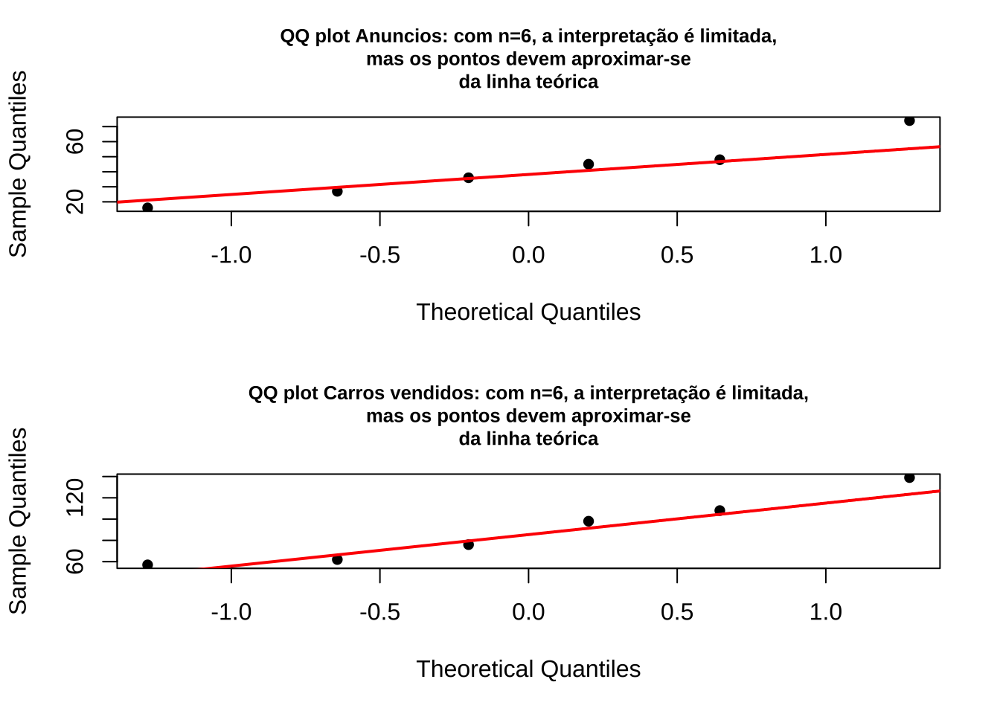

Capítulo 12 Introdução à Correlação Linear de Pearson

“Essentially, all models are wrong,but some are useful […]” (George Edward Pelham Box, 1919 - 2013)
12.1 Contexto histórico

Sir Francis Galton (1822-1911), antropólogo e meteorologista inglês, propôs no artigo escrito em conjunto com J. D. Hamilton Dickson (Family Likeness in Stature) apresentado à Royal Society of London em 21 de janeiro de 1886, expressar por uma função uma relação que observou entre estaturas de pais e seus filhos e descendentes.
Nesse artigo, Galton verificou que, embora houvesse uma tendência de que pais mais altos tivessem filhos altos (e pais mais baixos, filhos mais baixos), a estatura média de crianças nascidas de pais com dada altura tendia a regredir à altura média da população como um todo (paradoxo).
Nas palavras de Galton isso seria uma regressão à mediocridade (posição intermediária): pais mais altos que a estatura média têm filhos mais baixos que eles:
“Each peculiarity in a man is shared by his kinsman but, on the average, in a less degree[…] (Cada peculiaridade em um homem é compartilhada por seus parentes, mas, em média, em menor grau[…]-trad. livre)”

A Lei da Regressão de Galton foi referendada por Karl Pearson (On the Laws of Inheritance, 1903) poucos anos depois, quando analisou os dados de milhares de registros de estatura, tamanho do antebraço e da palma.
Em latim o prefixo co remete ao significado colaboração , união ou até simultaneidade. Correlação significa, portanto, uma relação mútua entre dois termos, uma correspondência.
Em Correlations and their Measurement, chiefly from Anthropometric Data, apresentado à Royal Society of London em dezembro de 1888, ele observou aquilo que viria a conceituar como co-relação ou correlação de estrutura.
Galton afirmou ao analisar o tamanho do braço com o da perna de um indivíduo que que dois órgãos são ditos serem correlacionados quando a variação de um é acompanhada, na média, pela variação para mais ou menos do outro:
- se a correlação fosse alta, uma pessoa com um braço longo teria também uma perna longa;
- se a correlação fosse moderada, o comprimento da perna não seria tão longo e,
- se não houvesse correlação, o comprimento de sua perna seria o comprimento médio desse membro na população.

“…Assim, ele naturalmente atingiu uma linha de regressão reta com variabilidade constante para todas as matrizes de um caractere para um dado caractere de um segundo. Talvez fosse melhor para o progresso do cálculo correlacional que este simples caso especial fosse exposto primeiro: é tão facilmente compreendido pelo iniciante[…]”

Houve um momento que Johann Carl Friedrich Gauss considerou sua descoberta (1795) da regressão estatística como “trivial”. O método dos mínimos quadrados parecia tão óbvio para Carl Friedrich Gauss que ele imaginou não ter sido o primeiro a usá-lo. Ele não declarou publicamente sua descoberta até alguns anos depois ( Theoria motus corporum coelestium in sectionibus conicis solem ambientium, 1809), quando seu contemporâneo Adrien-Marie Legendre ( Nouvelles méthodes pour la détermination des orbites des comètes, 1805) publicou o método. Quando Gauss sugeriu que ele o havia usado antes deu-se partida a uma das mais famosas disputas de antecedência na história da ciência. Gauss acabaria recebendo a maior parte do crédito como fundador da regressão, mas não sem uma briga.
12.2 Conceitos
Em estatística, a expressão correlação faz referência à relação existente entre variáveis, digamos X e Y que pode assumir diferentes padrões: linear ou não linear (quadrática, cúbica, exponencial …).
A autocorrelação refere-se à correlação de uma série temporal consigo mesma em diferentes defasagens temporais (lags). Formalmente, para uma série temporal \(X_t\), a autocorrelação de ordem \(k\) é definida como a correlação entre \(X_t\) e \(X_{t-k}\), medindo a dependência linear entre observações separadas por \(k\) períodos de tempo ou unidades espaciais.
12.2.1 Correlação linear versus regressão
a análise de correlação tem como principal objetivo medir a força ou o grau de associação linear entre as duas variáveis.
na análise de regressão linear o objetivo primário é expressar matematicamente uma relação linear entre duas variáveis de modo a possibilitar obter estimativas de uma para um valor não amostrado da outra, contruir intervalos de confiança para essas estimativas e testar variadas hipóteses.
12.2.2 Correlação versus causação
Embora a análise de regressão lide com o comportamento de uma variável em relação a outra(s), isso não implica necessariamente em causação. É preciso levar em conta que uma relação estatística por si só não implica logicamente uma causação. Para atribuir uma relação de causação deve-se lançar mão de considerações a priori ou teóricas.
Considerem a correlação existente entre a altura dos alunos de 6 a 17 anos e as notas médias anuais obtidas em matemática. Naturalmente não é o incremento que os alunos sofrem em suas alturas na fase de crescimento que causa a melhora nas notas; mas sim processos biológicos e comportamentais que resultam em melhorias na capacidade cognitiva.
12.3 Diagrama de dispersão

Descrito pela primeira vez por Francis Galton ( Regression Towards Mediocrity in Hereditary Stature , 1886), os diagramas de dispersão ( scatterplot ) ou gráficos de dispersão são representações de dados de duas (tipicamente) ou mais variáveis que são organizadas em um gráfico. O gráfico de dispersão utiliza coordenadas cartesianas para exibir valores de um conjunto de dados. Os dados são exibidos como uma coleção de pontos, cada um com o valor de uma variável determinando a posição no eixo horizontal e o valor da outra variável determinando a posição no eixo vertical (em caso de duas variáveis).
Considerem as simulações da dispersão de alguns valores de duas variáveis \(X\) e \(Y\). Vemos que em alguns casos nos parece ser razoável tentar exprimir qualquer tipo de relação entre os valores de \(X\) e \(Y\); todavia, há situações onde claramente vemos alguma forma de relação.
Essas formas bem poderiam ser expressas, aproximadamente, por diferentes funções como:
- lineares (retas) ou
- não lineares (curvas).
Vemos também que essas formas de associação entre os valores de \(X\) e \(Y\) podem ser diretas ou inversamente proporcionais (“positiva” ou “negativa”). Estamos particularmente interessados em quantificar o grau da relação dos valores de \(X\) e \(Y\) nos padrões lineares. (SIMULADOR 1)
12.4 Coeficiente de correlação linear de Pearson
O coeficiente de correlação linear (ou coeficiente de correlação produto momento de Pearson) expressa a medida da intensidade da associação linear entre duas variáveis.

Trabalhando-se com dados de uma amostra, o estimador da correlação linear populacional \(\rho\) é:
\[r = \frac{\sum _{i=1}^{n}{x}_{i} \cdot {y}_{i} - \frac{\sum _{i=1}^{n}{x}_{i}\sum _{i=1}^{n}{y}_{i}}{n}}{\sqrt{\left(\sum _{i=1}^{n}{x}_{i}^{2}-\frac{{\left(\sum _{i=1}^{n}{x}_{i}\right)}^{2}}{n}\right)\cdot \left[\sum_{i=1}^{n}{y}_{i}^{2}-\frac{{\left(\sum _{i=1}^{n}{y}_{i}\right)}^{2}}{n}\right]}},\]
em que \(x_{i}\): é o iésimo valor observado da variável X, \(y_{i}\): é o iésimo valor observado da variável Y, \(n\) é o número de pares de valores observados.
Equivalente à expressão:
\[r = \frac{\sum_{i=1}^{n}(x_i - \bar{x})(y_i - \bar{y})}{\sqrt{\sum_{i=1}^{n}(x_i - \bar{x})^2 \cdot \sum_{i=1}^{n}(y_i - \bar{y})^2}}.\]
Ou, simplificadamente:
\[ r = \frac{{S}_{xy}}{\sqrt{{S}_{xx}\cdot {S}_{yy}}} \]
em que \(S_{xy} = \sum _{i=1}^{n} x_{i}y_{i}\) - \(\frac{\sum _{i=1}^{n}x_{i}\cdot\sum _{i=1}^{n}y_{i}}{n}\), \(S_{xx} = \sum _{i=1}^{n} x_{i}^{2}\) - \(\frac{(\sum _{i=1}^{n} x_{i})^{2}}{n}\), \({S}_{yy}=\sum _{i=1}^{n}y_{i}^{2}\) - \(\frac{(\sum _{i=1}^{n} y_{i})^{2}}{n}\) e \(n\) é o número de pares de valores observados.
O cálculo do coeficiente de correlação linear de Pearson assemelha-se a uma análise de variância

Vejamos:
\[ y - \stackrel{-}{y} = (\hat{y} - \stackrel{-}{y}) + (y - \hat{y}). \]
Elevando-se ao quadrado ambos os termos, para todos os valores observados, teremos:
\[ \sum _{i=1}^{n} ({y_{i}} - \stackrel{-}{y_{i}})^{2} = \sum _{i=1}^{n} (\hat{y_{i}} - \stackrel{-}{y_{i}})^{2} + \sum _{i=1}^{n} (y_{i} - \hat{y_{i}})^{2} \]
A quantidade à esquerda mede a variação total dos y (Soma de quadrados total) e as quantidades à direita são a Soma de quadrados da regressão e a Soma de quadrados dos resíduos.
A definição abaixo de \(r\) exprime é fração da variação total dos \(y\) que está sendo explicada por sua regressão linear com \(x\).
\[
r=\sqrt{\frac{\sum _{i=1}^{n} (\hat{y_{i}} - \stackrel{-}{y_{i}})^{2}}{\sum _{i=1}^{n} ({y_{i}} - \stackrel{-}{y_{i}})^{2}}}.
\]
Observações:
a faixa de variação do coeficiente de correlação linear de Pearson é: \(-1 \le r \le 1\),
a correlação linear observada entre \(X\) e \(Y\) é simétrica; ou seja, é a mesma que se medida entre as variáveis \(Y\) e \(X\),
mede apenas a associação linear entre duas variáveis e, portanto, não tem sentido usá-lo na quantificação de relações que não sejam lineares,
a possibilidade de uma correlação linear negativa virá do resultado do numerador (\(S_{xy}\)), pois no denominador temos duas somas de quadrados,
o coeficiente de correlação mede apenas a intensidade das relações lineares entre \(X\) e \(Y\) e não estabelece per si nenhuma relação de causação.
Se \(r \approx 0\), não há evidência de relação linear entre as variáveis na amostra observada. Neste caso, variações em uma variável não estão linearmente associadas a variações sistemáticas na outra.
Se \(r \neq 0\), há evidência de relação linear entre as variáveis, cuja direção e intensidade são determinadas pelo sinal e magnitude de \(r\):
-quando \(r > 0\), a relação linear é : incrementos em uma variável tendem a ser acompanhados por incrementos na outra, e decréscimos em uma variável tendem a ser acompanhados por decréscimos na outra;
-quando \(r < 0\), a relação linear é : incrementos em uma variável tendem a ser acompanhados por decréscimos na outra, e vice-versa.
Exemplo 1: Um jornal deseja verificar a eficácia de seus anúncios na venda de carros usados e para isso realizou um levantamento de todos os seus anúncios e informações dos resultados obtidos pelas empresas que o contrataram e dele extraiu uma pequena amostra. A tabela a seguir mostra o número de anúncios e o correspondente número de veículos vendidos por 6 companhias que usaram apenas este jornal como veículo de propaganda. Existe alguma relação linear entre as variáveis? Construa o diagrama de dispersão e calcule o coeficiente de correlação linear.
| Companhia | Anúncios feitos (X) | Carros vendidos (Y) |
|---|---|---|
| A | 74 | 139 |
| B | 45 | 108 |
| C | 48 | 98 |
| D | 36 | 76 |
| E | 27 | 62 |
| F | 16 | 57 |

| Companhia | Anúncios (X) | Carros vendidos (Y) | xi * yi | xi2 | yi2 |
|---|---|---|---|---|---|
| A | 74 | 139 | 10286 | 5476 | 19321 |
| B | 45 | 108 | 4860 | 2025 | 11664 |
| C | 48 | 98 | 4704 | 2304 | 9604 |
| D | 36 | 76 | 2736 | 1296 | 5776 |
| E | 27 | 62 | 1674 | 729 | 3844 |
| F | 16 | 57 | 912 | 256 | 3249 |
| Totais | 246 | 540 | 25172 | 12086 | 53458 |
Sendo \(n= 6\) temos:
\[
S_{xy} = \sum _{i=1}^{n} x_{i}y_{i} - \frac{\sum _{i=1}^{n}x_{i}\cdot\sum _{i=1}^{n}y_{i}}{n} = 25172 - \frac{246 \cdot 540}{6} = 3032\\
S_{xx} = \sum _{i=1}^{n} x_{i}^{2} - \frac{(\sum _{i=1}^{n} x_{i})^{2}}{n} = 12086 - \frac{246^2}{6} = 2000\\
{S}_{yy} = \sum _{i=1}^{n}y_{i}^{2} - \frac{(\sum _{i=1}^{n} y_{i})^{2}}{n}= 53458 - \frac{540^2}{6} = 4858
\]
Portanto:
\[ r = \frac{{s}_{xy}}{\sqrt{{s}_{xx}\cdot {s}_{yy}}} = \frac{3032}{\sqrt{2000 \cdot 4858}} = 0,9727 \] —
12.5 Teste de hipóteses para a correlação linear na população
O coeficiente de correlação populacional \(\rho\) sempre é estimado a partir do coeficiente de correlação amostral \(r\). Para se realizar inferências concernentes a \(\rho\) a partir de \(r\) temos que ter o conhecimento da distribuição amostral dos coeficientes de correlação linear \(r\).
Para se testar a existência de correlação na população um teste de hipóteses com estrutura bilateral pode ser proposto:
\[
\begin{cases}
H_{0}:\rho = 0 \hspace{0.1cm} \text{, ie. a correlação linear entre X e Y é nula} \\
H_{1}:\rho \ne 0 \hspace{0.1cm} \text{, ie. a correlação linear entre X e Y não é nula} \\
\end{cases}
\]
Lembrando a tradicional analogia de que um teste de hipóteses guarda uma certa semelhança a um julgamento: caso não haja indício forte o suficiente para comprovar a culpa do acusado ele é tecnicamente declarado não culpado (e não inocente).
Seguindo esse raciocínio, o indício ou evidência que nos permitirá rejeitar a hipótese nula virá de uma evidência amostral e a significância dessa evidência amostral será calculada a partir da estatística (\({t}_{calc}\)), que considera o o coeficiente de correlação amostral \(r\) e o tamanho da amostra \(n\) e a comparação de seu valor a um valor limite de uma distribuição de probabilidade chamada t de Student (\(t_{tab}\)), adequada para a variável aleatória \(r\):
\[ {t}_{calc}=\frac{r\cdot\sqrt{n-2}}{\sqrt{1-{r}^{2}}}\\ T \sim t_{(n-2)} \]
Para que o teste de correlação de Pearson seja exato, a distribuição bivariada \((X,Y)\) deve seguir uma distribuição normal bivariada. No entanto, o teste é razoavelmente robusto a violações deste pressuposto quando o tamanho amostral é grande (n>30). Para amostras pequenas ou quando há forte evidência de não-normalidade, alternativas não-paramétricas como o coeficiente de correlação de Spearman devem ser consideradas.

Rejeita-se a hipótese nula (\(H_{0}:\rho = 0 \hspace{0.1cm} \text{, ie. a correlação linear entre X e Y é nula}\)) se o valor da estatística calculada for tão extremo que se verifique:
br>
\[
t_{calc} \le {t}_{tab[\frac{\alpha }{2};\left(n-2\right)]}\\
\text{ou}\\
t_{calc} \ge {t}_{tab[1-\frac{\alpha }{2};\left(n-2\right)]}\\
\]
ou, equivalentemente, \(|t_{calc}| \ge {t}_{tab\left[1-\frac{\alpha}{2};\left(n-2\right)\right]}\), em que \(t_{tab}\) é o quantil associado na distribuição “t” de Student (William Sealy Gosset, 1876-1937) ao nível de significância pretendido (\(\alpha\)) com \((n-2)\) graus de liberdade. O número de graus de liberdade irá determinar qual curva da família dessa distribuição será utilizada, por essa razão, as tabelas apresentam-se individualizadas por nível de significância e graus de liberdade.
As curvas da família “t” possuem simetria em relação a um eixo vertical no valor de máxima densidade. O valor tabelado dessa estatística acha-se associado à área sob ela pois é uma função densidade de probabilidade: a totalidade da área sob essa curva é igual a 1 (probabilidade de 100%)
Assim, se consultarmos em uma tabela o valor “t” para um nível de significância \(\alpha\) qualquer, correspodente assim a um nível de confiança de (\(1-\alpha\)), qualquer veremos que ele será igual, em módulo, ao valor “t” no outro extremo dessa curva.
Por essa razão muitas tabelas apresentam valores dessa estatística sob os títulos de monocaudal ou bicaudal pois estão apresentando os valores para um determinado nível de significância (\(\alpha\)): área sob a curva, situado apenas em um lado (ou subdividido nos dois ramos da curva nas tabelas chamadas “bilaterais”).
O teste de hipótese que iremos realizar é um teste bilateral; assim, o gráfico apropriado para se decidir pela rejeição ou não da hipótese nula assume a forma mostrada nessa simulação. (SIMULADOR 2 COM t)
12.5.1 Outros testes de hipóteses sobre a correlação linear na população
Outros tipos de testes só podem ser realizados através da estatística \(\zeta\) (zeta) de Fisher. A transformação \(Z\) proposta por Fisher produz uma estatística que possui distribuição aproximadamente Normal. Para essa situação a estatística a ser utilizada é dada por:
\[ \zeta = \frac{1}{2}\ln\frac{(1+r)}{(1-r)} \]
que possui uma distribuição aproximadamente Normal, com média e desvio padrão:
\[ \mu_{\zeta} = \frac{1}{2}\ln\frac{(1+\rho_{0})}{(1-\rho_{0})} \text{ e } \sigma_{\zeta} = \frac{1}{\sqrt{n-3}} \]
Transformando-se \(\zeta\) em unidades padrão (pela subtração de \(\mu_{\zeta}\) e divisão por \(\sigma_{\zeta}\)), chega-se à estatística tabelada:
\[z = \frac{\zeta - \mu_{\zeta}}{\sigma_{\zeta}} = (\zeta - \mu_{\zeta}) \cdot \sqrt{n-3}\]
que, sob \(H_0: \rho = \rho_0\), segue aproximadamente uma distribuição Normal padrão \(N(0,1)\).
Exemplo 2: Faça o teste de hipóteses para a correlação linear \(\rho\) a partir da correlação amostral \(r\) calculada no exercício dos anúncios de veículos, sob um nível de significância (\(\alpha\)) de 0,05.
No exercício referido obtivemos um valor para a correlação linear de Pearson de \(r=0,9727\). A partir desse valor podemos calcular o valor de nossa estatística \({t}_{calc}\) para o teste:
\[
{t}_{calc}=\frac{r\cdot\sqrt{n-2}}{\sqrt{1-{r}^{2}}} = 8,38
\]
Rejeitaremos a hipótese nula (\(H_{0}\)) se:
\[
t_{calc} \le {t}_{tab[\frac{\alpha }{2};\left(n-2\right)]}\\
\text{ou}\\
t_{calc} \ge {t}_{tab[1-\frac{\alpha }{2};\left(n-2\right)]}
\]
Da tabela extraímos o valor de nossa estatística de comparação a um nível de significância \(\alpha=5\%\) e, para um tamanho amostral \(n=6\), temos como graus de liberdade \(n-2=4\) (\(t_{tab}=2,776\)). Vê-se que o valor calculado da estatística “t” encontra-se além dos limites estabelecidos pela estatística de comparação (\(t_{tab}\)) para um nível de significância de \(\alpha=5\%\). (SIMULADOR 2 COM t)
# Dados do Exemplo 1
anuncios <- c(74, 45, 48, 36, 27, 16)
carros_vendidos <- c(139, 108, 98, 76, 62, 57)
# Teste usando função nativa do R (para comparação)
teste <- cor.test(anuncios, carros_vendidos)
print(teste)##
## Pearson's product-moment correlation
##
## data: anuncios and carros_vendidos
## t = 8.4, df = 4, p-value = 0.001
## alternative hypothesis: true correlation is not equal to 0
## 95 percent confidence interval:
## 0.7653 0.9971
## sample estimates:
## cor
## 0.9727


12.5.1.2 Resolução do sistema de equações matriciais
Seja a matriz \(Y\) das observações realizadas na variável dependente \(Y_{i}\) (dimensão \(n \times 1\)):
\[ Y = \begin{pmatrix} y_{1} \\ y_{2} \\ \vdots \\ y_{n} \end{pmatrix} \]
Seja a matriz \(X\) das observações realizadas na variável independente \(X_{i}\) (dimensão \(n \times 2\)):
\[ X = \begin{pmatrix} 1 & x_{1} \\ 1 & x_{2} \\ \vdots & \vdots \\ 1 & x_{n} \end{pmatrix} \]
Seja a matriz \(\beta\) dos parâmetros a serem estimados (dimensão: \(2 \times 1\)):
\[ \beta = \begin{pmatrix} \hat{\beta}_{0} \\ \hat{\beta}_{1} \end{pmatrix} \]
Seja a matriz \(e\) dos termos aleatórios (dimensão: \(n \times 1\)), não correlacionados, com média zero e variância constante:
\[ e = \begin{pmatrix} e_{1} \\ e_{2} \\ \vdots \\ e_{n} \end{pmatrix} \]
Então podemos escrever o seguinte sistema matricial:
\[ Y = X \cdot \hat{\beta} + e \]
A minimização da soma dos quadrados dos resíduos pode ser realizada fazendo-se:
\[ \Sigma (e_{i})^{2} = e^T \cdot e \]
O sistema acima tomará a forma:
\[ e = Y - X \cdot \hat{\beta} \]
\[ e^T \cdot e = (Y - X \cdot \hat{\beta})^T \cdot (Y - X \cdot \hat{\beta}) \]
Expandindo:
\[ Y^T \cdot Y - 2 \cdot \hat{\beta}^T \cdot X^T \cdot Y + \hat{\beta}^T \cdot X^T \cdot X \cdot \hat{\beta} \]
Minimizando os resíduos, obtemos a equação normal:
\[ (X^T \cdot X) \cdot \hat{\beta} = X^T \cdot Y \]
Multiplicando ambos os lados por \((X^T \cdot X)^{-1}\):
\[ (X^T \cdot X)^{-1} \cdot (X^T \cdot X) \cdot \hat{\beta} = (X^T \cdot X)^{-1} \cdot X^T \cdot Y \]
Por fim, considerando-se que \((X^T \cdot X)^{-1} \cdot (X^T \cdot X) = I\), obtemos a solução para \(\hat{\beta}\):
\[ \hat{\beta} = (X^T \cdot X)^{-1} \cdot X^T \cdot Y \]